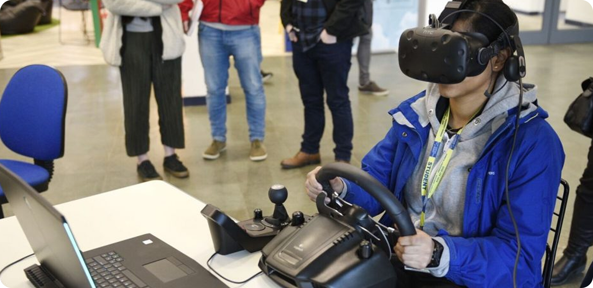
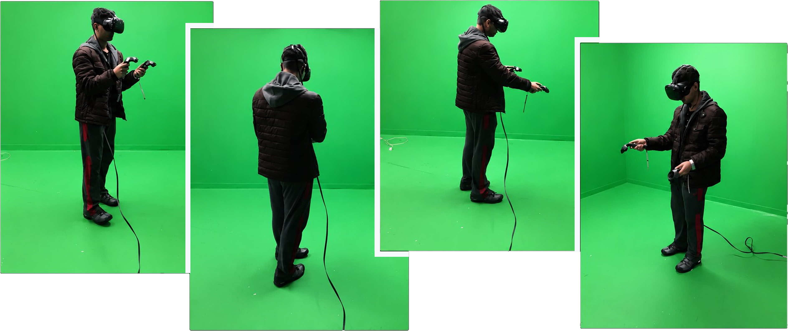
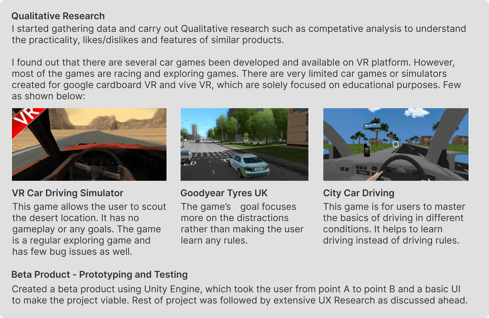
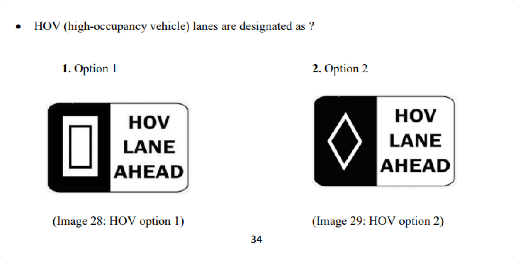
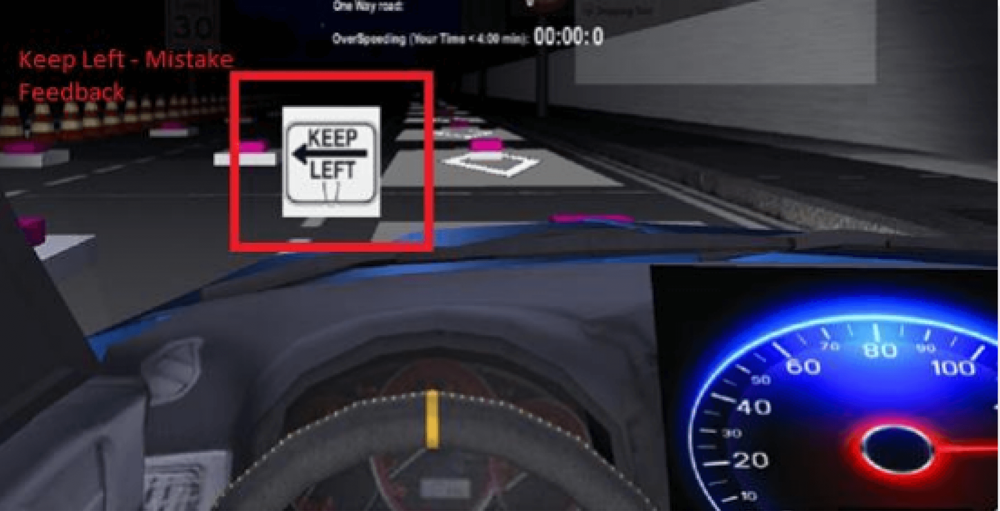
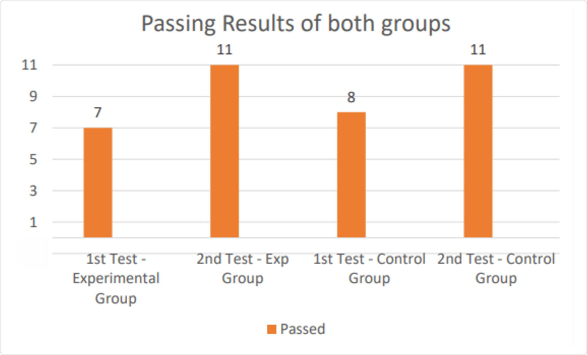
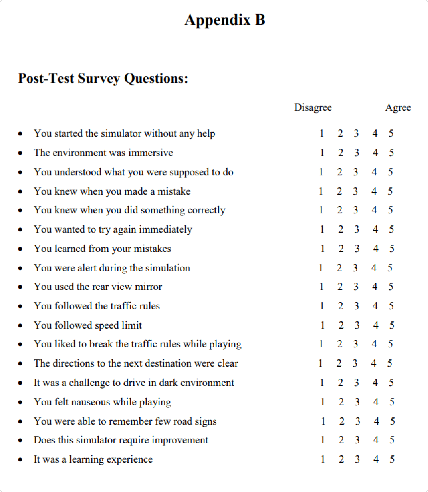
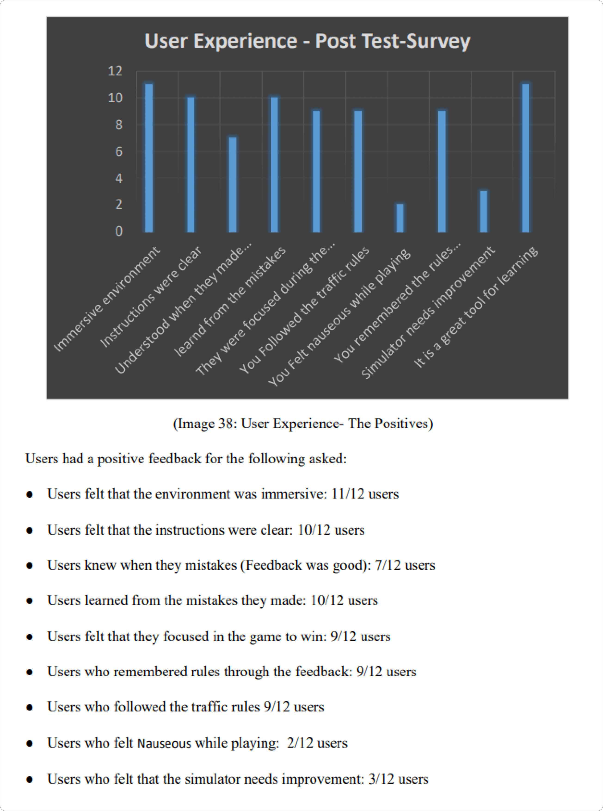
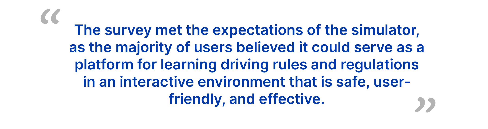

An immersive VR driving simulator designed to teach road rules and DMV regulations — validated through A/B testing with 70+ users on Oculus and Google Cardboard.

Learning driving rules through a static manual is tedious and ineffective. Many first-time drivers fail their initial exams, requiring re-examination — a costly and frustrating cycle.
An immersive VR game with 10 tasks, real-time audio/visual alerts, a speedometer, minimap, and pass/fail scoring — making it easy to recognize mistakes and learn from them immediately.
As sole author and creator, I designed, developed, and conducted systematic UX research — including brainstorming, programming, A/B testing, user surveys, interviews, and usability testing.


The alpha version was built based on prior usability testing sessions — featuring complete scenarios, success/fail outcomes with feedback, and served as the foundation for quantitative A/B research.
Source code available on GitHub →
22 non-drivers were split into two groups. Both took a baseline quiz, then the experimental group played the VR game while the control group read the RMV manual. Both groups retook the quiz afterward — measuring learning effectiveness of each approach.
11 users played the VR simulator, then retook the learner's permit quiz. Pass rates improved significantly after the simulation experience.
11 users read a relevant section of the RMV manual, then retook the quiz. Results were comparable — validating the simulator as equally effective to traditional study.
Users were alerted in-game when entering HOV zones, reinforcing the real-world rule in an experiential context they could immediately apply to quiz questions.
Quiz question example

In-game HOV alert

Both groups showed measurable improvement on the second quiz. The simulator proved as effective as the manual for learning key road rules — validating VR as a legitimate and engaging alternative learning medium.



